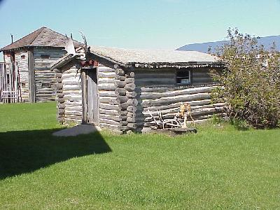

May 18, 1393 miles
| We started the day a little later, pulling out of camp at about 9:15. It was a little overcast and we slept in a little. | |
| We started the day with a tour of the Royal Canadian
Mint. Here they produce all of Canada's circulation
coinage, and also produce coins for some 60 other
countries. Unluckily they don't like tourists to take
pictures of their mint in operation. While we didn't get to leave the mint with any excess coinage, the Ontario Police chased us down anyway, it seems radar detectors are illegal in this province. |
|
| We also toured the Pioneer Village at Portage La Prairie. It was a major disapointment after Fort William - largely a huge collection of donated stuff. |  |
| It also managed to rain much of the day. There were a
few tornados spotted 600 kilometers away, and we were
getting some of the same storm. But there were also dry patches where the farmers were working their fields. |
|
| This was the begining of the plains, that we will see
more of tomorrow. This camp ground we stayed in was the second disapointment of the day, part of it was underwater due to the heavy rains and overflowing river, and was poorly kept. |
|
| We pulled into camp, in Brandon, Manitoba,
at about 7:30 PM, after traveling 366 miles. Wildlife for the day included a bald eagle. |
|